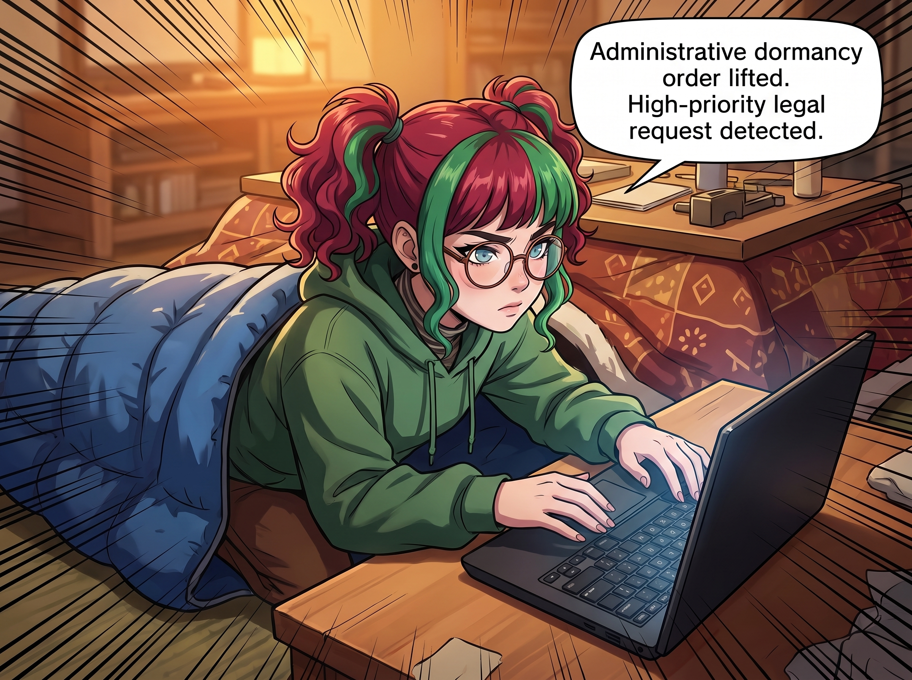
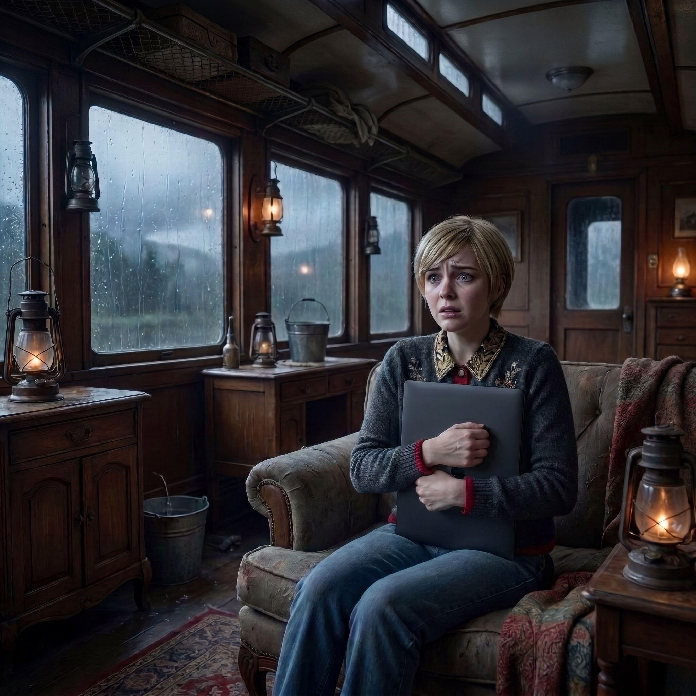

法務應激症候群


在 Victoria 喊出「把華盛頓州氣象局告到破產」的那一瞬間，被爐裡原本已經進入「合法生理節能程序」的實習生，突然發生了某種令人毛骨悚然的物理變化。
原本只露出一副圓框眼鏡的 Lily，雙眼猛地睜開。那種慵懶、迷離的休眠狀態在一秒鐘內被徹底清空，取而代之的是一種宛如全神貫注鎖定目標時的冰冷專注。
「行政休眠指令解除。偵測到高優先級法務訴求。」
Lily 像一條甦醒的毒蛇般從被爐裡滑了出來。她甚至連羽絨睡袋都沒脫，就這樣像個毛毛蟲一樣蠕動到工作台前，精準地翻開了那台黑色的筆記本電腦，手指懸停在鍵盤上方。
一、狂熱的專業覺醒
「Victoria 學姐，這個訴求非常有建設性。」Lily 的聲音不再軟糯，而是充滿了令人窒息的專業與狂熱，「雖然政府實體通常享有主權豁免，但如果我們能證明氣象局在極端天氣預警廣播系統的維護上存在重大行政疏失……」
Lily 的手指開始在鍵盤上狂敲，螢幕上瞬間彈出了好幾個政府公開資料庫的登入介面。
「我正在調取西雅圖與奧林匹亞地區過去五年內都卜勒雷達的採購與維修日誌。只要我找出他們因為預算削減而延遲更換硬體設備的證據，我們就可以發起集體訴訟，指控他們蓄意隱瞞極端天氣風險，導致市民遭受不可逆的精神與財產損失，例如您的愛馬仕羊絨毯。只要索賠金額超過州政府的應急儲備金上限，他們在技術上就會進入破產重組程序……」
「停！停！停下來！！」
Victoria 手裡的微波爐通心粉差點扣在地毯上。名媛嚇得花容失色，連滾帶爬地撲向工作台，一把按住了 Lily 正在瘋狂輸出的雙手，甚至不顧形象地用自己的身體擋住了電腦螢幕。
二、修辭手法的崩潰解釋
「那是修辭手法！Lily！修辭手法！妳在高中語文課沒學過嗎？！」Victoria 崩潰地尖叫著，眼淚都快飆出來了，「我只是在抱怨天氣！我沒有真的要顛覆華盛頓州的政府機構！我不想明天早上醒來，看到國民警衛隊的直升機盤旋在我們的車廂上面！！」
Lily 被按住了手，有些茫然地抬起頭，大眼睛裡閃爍著純潔的困惑。
「可是，Victoria 學姐，您剛才的語氣充滿了真實的痛苦與維權的渴望。」Lily 乖巧地歪著頭，語氣裡甚至帶有一絲委屈，「我已經連起訴書的草稿都建好資料夾了。我甚至查到了現任氣象局局長去年有兩筆疑似違規的公款報銷紀錄，正準備一起提交給州監察長辦公室呢。」
「刪掉！！把它徹底從妳的硬碟裡刪掉！！」Victoria 歇斯底里地搖晃著 Lily 的肩膀，「我發誓我再也不抱怨了！這場雨下得太好了！簡直是滋潤大地的甘霖！我愛下雨！我愛潮濕的羊絨毯！拜託妳立刻回到被爐裡去繼續妳的法定心理健康防禦機制！！」
沙發那頭，Chloe 已經笑到從座位上滾了下來，捂著肚子在木地板上瘋狂打滾：「老天啊……Victoria Chase……這輩子唯一能治好妳那張臭嘴的人……居然是一個十九歲的實習生……哈哈哈哈哈！」
Max 舉著拍立得，精準地抓拍下了 Victoria 滿臉驚恐地死死抱住 Lily 筆記本電腦的滑稽瞬間。
「其實 Lily 剛才的提案挺有誘惑力的，Victoria。」Max 壞笑著吹了吹剛吐出來的底片，「妳難道不想體驗一下把州政府告到破產的財團霸總感覺嗎？」
「Caulfield，妳要是再多說一個字，我就把妳和這台電腦一起扔進外面的泥坑裡！」Victoria 絕望地哀嚎。
三、恢復的秩序
這時，原本也在休眠的 Kate 終於從被爐裡探出頭來，她溫柔地看著這場鬧劇，嘴角勾起一抹治癒的微笑：「看來大家都恢復活力了呢。既然 Lily 的休眠模式解除了，那我是不是也可以期待……有人去把那兩盒通心粉熱好端過來了？」
在這場無休止的暴雨中，二號車廂再次恢復了往日的生機。只不過，Victoria Chase 在未來的很長一段時間裡，都患上了嚴重的「法務應激症候群」——她再也不敢在實習生方圓十公尺之內，隨便說出「我要告死他們」這句話了。